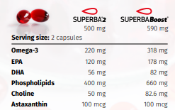

Fosfolipidy
Forma lipidowa kojarzona z efektywnym transportem i integracją składników w błonach komórkowych.
Naturalny kompleks morski omega-3
Strona produktowa dla oleju z kryla: czytelna, statyczna i gotowa do wdrożenia jak prosta strona firmowa. Treść skupia się na składzie, pochodzeniu, jakości i przewagach formy fosfolipidowej.
Dlaczego kryl
Olej z kryla różni się od wielu klasycznych olejów rybich tym, że znaczna część kwasów omega-3 występuje w formie fosfolipidowej. Fosfolipidy są naturalnym elementem błon komórkowych, dlatego komunikacja marketingowa może opierać się na prostym przekazie: składniki odżywcze dostarczane w formie dobrze rozpoznawanej przez organizm.
Produkt zawiera nie tylko EPA i DHA, ale także choline oraz naturalnie obecną astaksantynę, która odpowiada za charakterystyczny czerwony kolor oleju i pomaga chronić olej przed utlenianiem.
Forma lipidowa kojarzona z efektywnym transportem i integracją składników w błonach komórkowych.
Kluczowe kwasy omega-3 używane w komunikacji dotyczącej serca, mózgu i oczu.
Składnik ważny dla metabolizmu lipidów, homocysteiny i prawidłowego funkcjonowania wątroby.
Naturalny antyoksydant obecny w oleju z kryla, związany z jego czerwonym kolorem.
Obszary komunikacji
Strona celowo nie obiecuje leczenia chorób. Treści są napisane jako bezpieczna baza marketingowa dla suplementu diety i powinny zostać końcowo sprawdzone pod rynek sprzedaży.
EPA i DHA mogą być komunikowane w kontekście prawidłowej pracy serca zgodnie z warunkami stosowania oświadczeń zdrowotnych.
DHA jest mocnym punktem przekazu przy produktach skupionych na funkcjach poznawczych i wzroku.
Cholina daje legalnie użyteczny kierunek komunikacji: metabolizm lipidów, homocysteiny i funkcja wątroby.
Olej z kryla można pozycjonować jako codzienne wsparcie diety osób aktywnych, bez agresywnych obietnic medycznych.
Skład produktu
Poniższa tabela jest przygotowana jako sekcja produktowa. Można ją zostawić jako tekst HTML, ponieważ jest lepsza dla SEO niż sama grafika. Grafika z materiałów została dodana obok jako szybka referencja wizualna.
| Składnik | Superba 2 500 mg |
Superba Boost 590 mg |
|---|---|---|
| Omega-3 | 220 mg | 318 mg |
| EPA | 120 mg | 178 mg |
| DHA | 56 mg | 82 mg |
| Fosfolipidy | 400 mg | 660 mg |
| Cholina | 50 mg | 82,6 mg |
| Astaksantyna | 100 mcg | 100 mcg |

Jakość i pochodzenie
Dla tej kategorii produktu zaufanie jest równie ważne jak skład. Dlatego układ strony mocno eksponuje źródło surowca, certyfikacje, śledzenie partii i stabilność dostaw.


Materiał bazowy mocno eksponuje zaplecze naukowe i udokumentowane obszary badań.
Warto wykorzystać jako argument jakości i technologii w komunikacji B2B.
Informacja o globalnej dystrybucji wzmacnia wiarygodność dostawcy.
Pełne śledzenie partii jest jednym z głównych argumentów sprzedażowych.
Alternatywa DHA
Materiały zawierają również linię Revervia, czyli olej z mikroalg w naturalnej formie trójglicerydowej. To dobry dodatek do strony, jeżeli oferta ma obejmować także produkt fish-free, vegan i bez skorupiaków.

Bezpieczeństwo treści
Teksty na stronie są napisane ostrożnie. Przed uruchomieniem sprzedaży należy sprawdzić finalne oświadczenia zdrowotne, dawkowanie, etykiety, ostrzeżenia alergenne i wymagania rynku docelowego. Olej z kryla pochodzi ze skorupiaków, więc produkt nie jest odpowiedni dla osób z alergią na skorupiaki. Suplement diety nie zastępuje zróżnicowanej diety ani leczenia.
Kontakt
Podmień dane kontaktowe na właściwe. Formularz działa jako bezpieczny mailto, więc nie wymaga backendu ani zewnętrznej usługi formularzy.